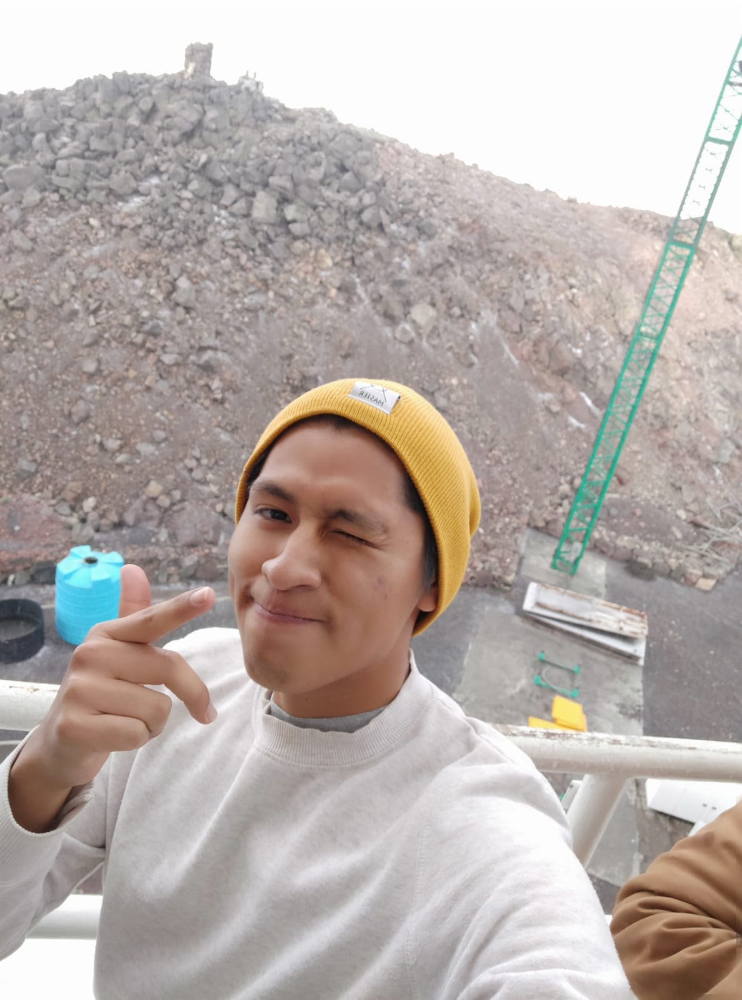

Néstor Alan López López

Summary
Work on a research project related to microcontroller programming,
electronic circuit creation, and database management and analysis to test
my competencies, skills and abilities, with the objective of complementing
my professional training and acquiring more tools for future projects in
the industry.
Education
-
Since 2019. Physics applied undergraduate - Benemérita Universidad
Autónoma de Puebla (BUAP)
Supplementary training
-
Social Service in the development of an electronic nose as a
non-invasive method for the detection, recognition and discrimination of
organic compounds.
Benemérita Universidad Autónoma de Puebla (BUAP) - Facultad de Ciencias
Físico Matemáticas
-
Professional practice in observation techniques, image processing,
database use and other activities related to astronomical research.
Benemérita Universidad Autónoma de Puebla (BUAP) - Facultad de Ciencias
Físico Matemáticas
-
Volunteer at Del Aula al Universo as a trainer in the correct handling
of optical telescopes and astronomy communicator for the Night of the
Stars event. Observing techniques, image processing, database use and
other activities related to astronomical research.
Awards and Certifications
Programming Skills
Other